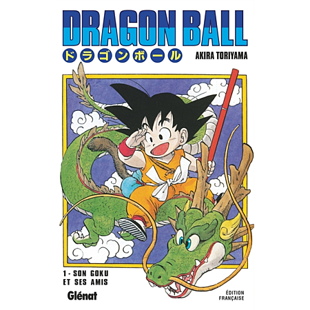
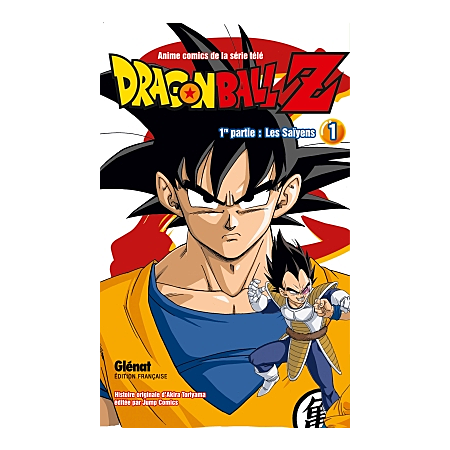
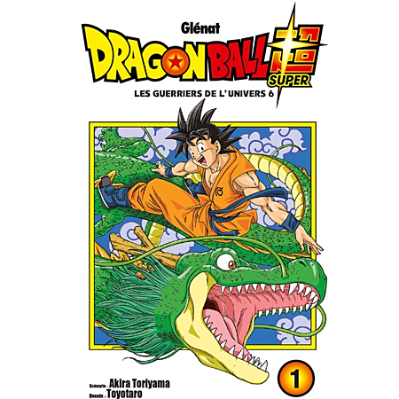
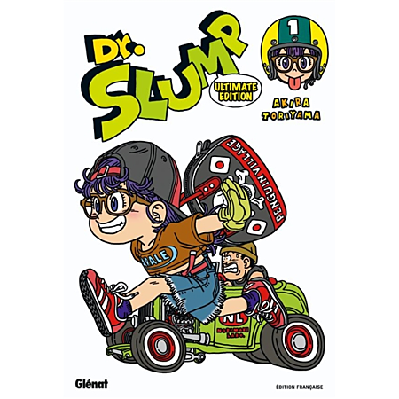

- 
- 
- 
- 
-
Dragon Ball
1984‑1995L'histoire : La rencontre explosive entre Son Goku, un enfant sauvage à queue de singe, et Bulma, une citadine à la recherche des sept boules de cristal. Une aventure pleine d'humour et d'arts martiaux inspirée des légendes chinoises.
Le saviez-vous ? Toriyama voulait initialement finir le manga après la première recherche des boules de cristal. Le succès phénoménal l'a "forcé" à continuer.
-
Dragon Ball Z
2015‑en coursL'histoire : Le ton change radicalement. Goku découvre ses origines extraterrestres (Saiyan) et les enjeux deviennent cosmiques. Les combats sont plus violents, plus rapides, et le destin de l'univers est constamment en jeu.
Point clé : C'est cette partie qui a popularisé le concept de "transformation" dans les mangas (Super Saiyan), devenu aujourd'hui un standard du genre.
-
Dragon Ball Super
2015‑en coursL'histoire : La suite directe de l'arc Buu. Goku et Vegeta ont atteint un niveau tel qu'ils rivalisent désormais avec les Dieux de la Destruction et explorent le multivers.
La particularité : C'est une œuvre collaborative. Akira Toriyama écrivait le scénario global et les designs, mais c'est Toyotaro, son successeur désigné, qui dessinait le manga.
-
Dr. Slump
1980‑1984L'histoire : Bienvenue au Village Pingouin, où le génial mais maladroit Senbei Norimaki crée Arale, une petite fille robot à la force démesurée et à la naïveté hilarante.
Pourquoi c'est culte : Avant Dragon Ball, c'est ce manga qui a fait de Toriyama une superstar au Japon. C'est un chef-d'œuvre d'humour "nonsense" et de gags visuels.